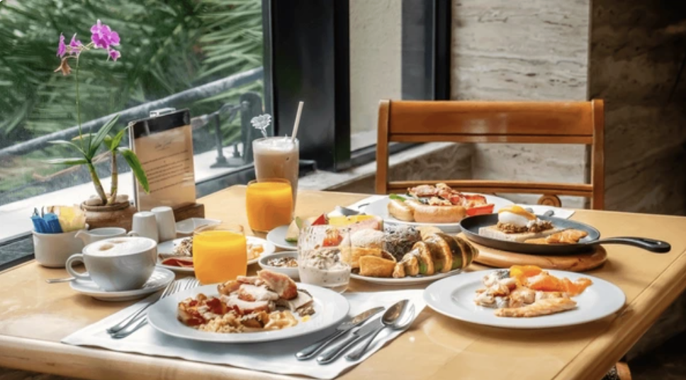
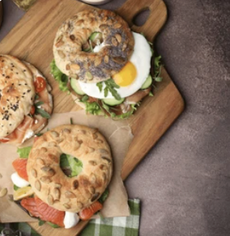
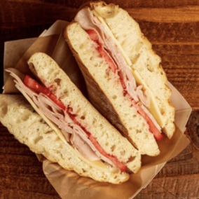
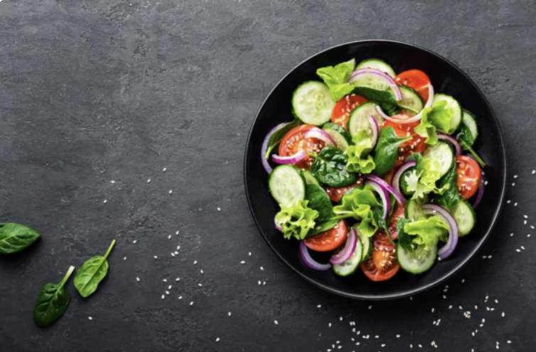
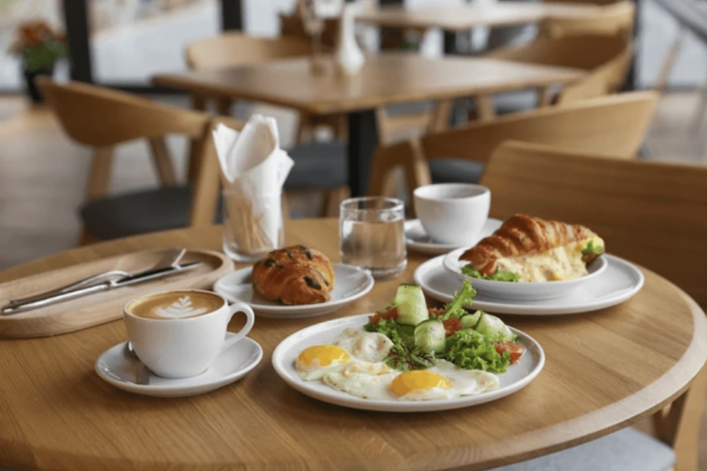

Local Ingredients
We partner with local farms to bring you the freshest produce.

At Hunter Web Cafe we serve seasonal dishes created from locally sourced ingredients. Stop by for breakfast, lunch, or dinner. Try our coffee!






We partner with local farms to bring you the freshest produce.
Rotating seasonal menu built around flavor and balance.
Comfortable seating and warm service for every meal.